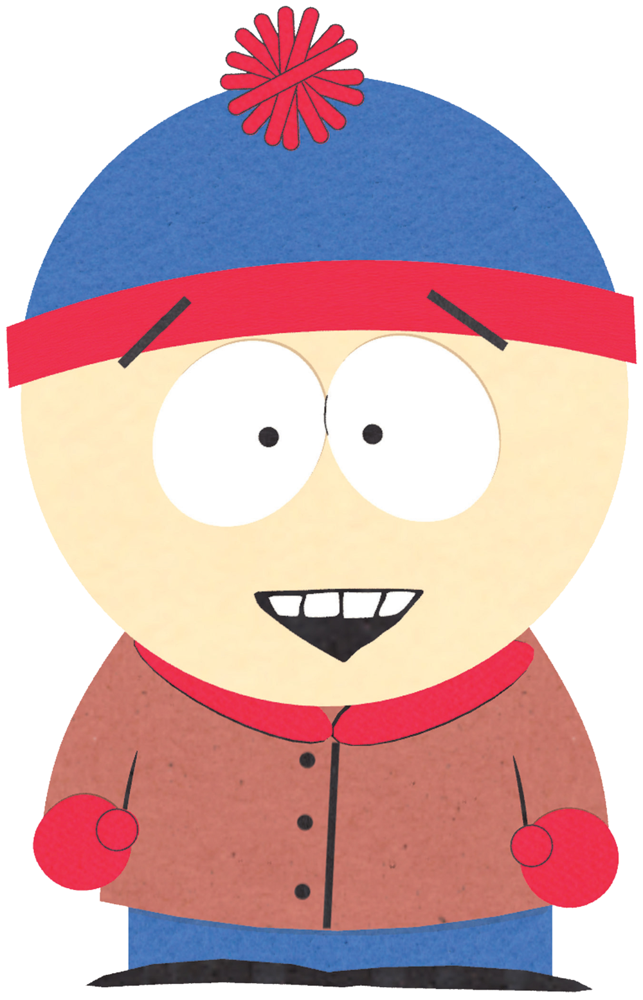

Character : Stanley "Stan" Marsh
Stanley "Stan" Marsh is one of South Park's main characters along with Kyle Broflovski, Eric Cartman, and Kenny McCormick.
Background
Stan attends South Park Elementary as part of Mr. Garrison's Fourth Grade Class (formerly Third). Stan's father Randy is a geologist, and his mother Sharon is a secretary at Tom's Rhinoplasty.
Catch Phrases and Mannerisms Since its beginning, the series has had a running gag where when Kenny is killed, Stan will announce, "Oh my God, you/he/she/they/we killed Kenny!" Kyle will then respond: "You/that/those/we're bastard(s)!", or vice versa.
Stan's often-used catchphrase during the early seasons was "Dude, this is pretty fucked up right here," which originated in the second The Spirit of Christmas short (the profanity was bleeped out). In recent episodes however this catchphrase faded.
In many episodes, Stan sums up the episode's main points in a small speech that often begins with, "You know, I learned something today." However, it is more common for Kyle to do it, and a few other characters such as Cartman and the Mayor have as well. Stan is often shown with his hands in his coat pockets as he walks, or when in deep thought.
In the later episodes, Stan also has a habit of pinching the bridge of his (unseen) nose and shutting his eyes tightly when frustrated or exasperated, saying phrases such as "Oh no." A good example of this is in "Manbearpig" where he does this motion when on the phone with Al Gore. Another example is in "With Apologies to Jesse Jackson", when he does it all the way home from the set of Wheel of Fortune. His mother is also seen doing the motion in that scene. He also does it the whole time when the reporter is talking to Randy in "Goobacks". The gesture seems to be a learned habit developed by his constant frustration with his parents. Kyle also has a mannerism like this, often closing his eyes when stressed. This isn't uncommon with Stan and Kyle, often throughout the series being criticized as having the same personality.
Stan often groans, "Aw-awww!" when he's upset, which seems to be an inherited habit; his father does this sometimes as well. This is the same catchphrase Trey Parker used in BASEketball.
If he agrees with someone or is unsure of something, he will often state "sure" or "yeah" in a very dull, unimpressed manner. Whenever he gets mad, frustrated or gets dragged into something, he often says "Goddammit!", not to be confused with Cartman's catchphrase, "Aw! God-damn it!" Often in school, he'll say "Oooooh....." with a slightly higher pitched tone than his normal voice. He will often express shock with "Jesus Christ!" This is evident in "Super Fun Time" and "About Last Night...".